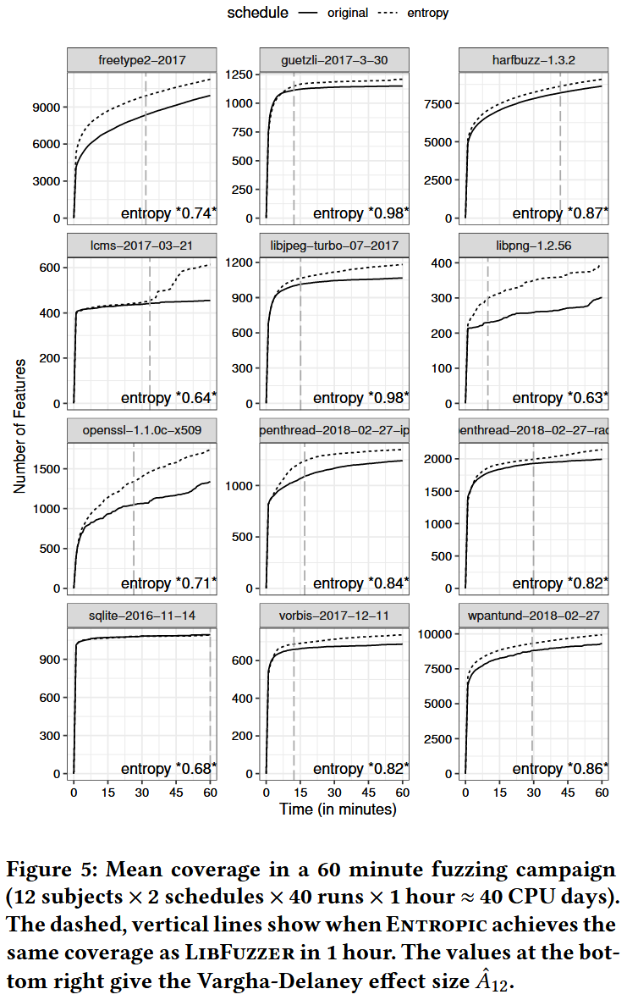
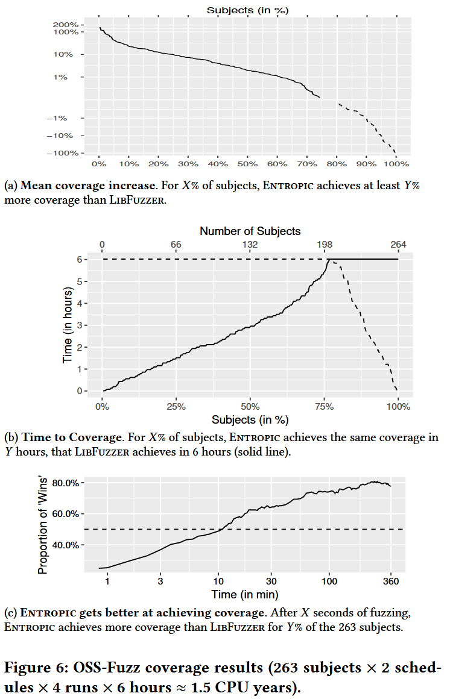
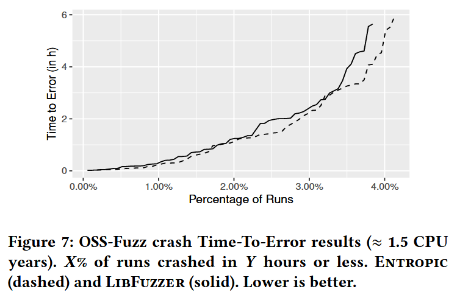
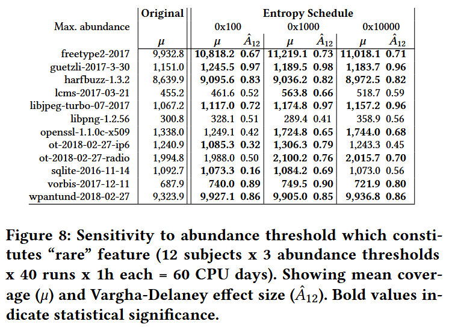
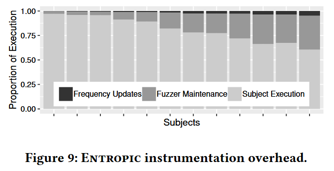

Boosting Fuzzer Efficiency: An Information Theoretic Perspective [ESEC/FSE 2020]
模糊测试之前, 模糊器对程序 的行为一无所知, 执行一个输入, 可以了解 在该输入下的行为. 因此每次执行都可以揭示 的信息, 信息的度量是香农熵 (Shannon’s entropy), 度量熵可以量化从每个生成的测试输入中了解到程序行为的多少. 用熵度量概率模型的模糊器发现程序新行为的效率, 高效的模糊器应该最大化信息.
从信息论的角度出发, 作者开发 Entropic, 一种基于熵的灰盒模糊测试能量调度策略, 为那些最大化信息的种子分配更多的能量. 作者将 Entropic 实现到流行的灰盒模糊器 LibFuzzer 中, 对超过 250 个开源程序 (6000万行代码) 进行的实验表明, Entropic 显著提高效率, 并验证论文的假设: 高效的模糊测试器能够最大化信息. Entropic 已通过独立评估, 并被邀请集成到主线 LibFuzzer 中.
Contributions
- 为非确定性模糊测试开发信息论基础, 研究每个测试揭示程序行为的平均信息量
- 将香农熵与模糊测试器的行为发现率正式关联, 即将效率建立为一个信息论量
- 介绍几种在模糊测试背景下有用的信息估计方法
- 提出第一个基于熵的能量调度方法, 以提高灰盒模糊测试器的效率
- 提供开源实现, 称为 Entropic, (暂时没找到 libfuzzer 里对应的代码)
- 对超过 250 个广泛使用的开源 C/C++ 程序进行大量的实证评估, 产生了超过 2 个 CPU 年的数据. 数据和 R 脚本开源: https://doi.org/10.6084/m9.figshare.12415622.v2
Methods
MEASURE OF FUZZER EFFICIENCY
INFORMATION-THEORETIC BOOSTING
Evaluation
RQ.1 What is the empirical coverage improvement over the baseline?


RQ.2 How much faster are bugs detected compared to the baseline?

RQ.3 How does the choice of abundance threshold θ influence the performance of our technique?

RQ.4 What is the cost of maintaining incidence frequencies?
